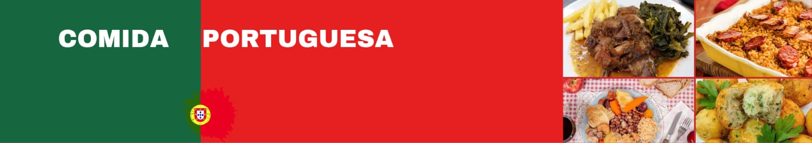
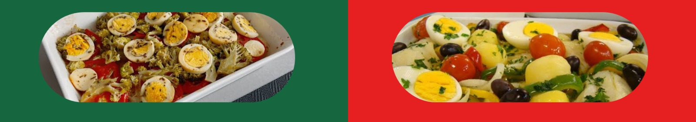
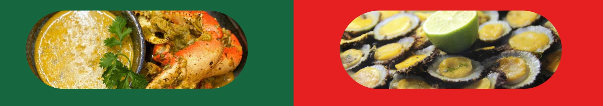
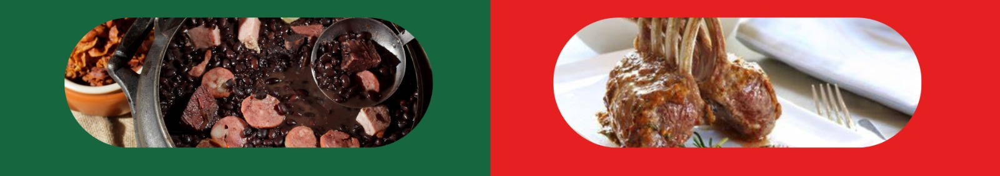
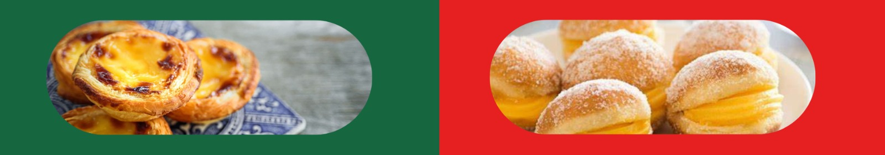
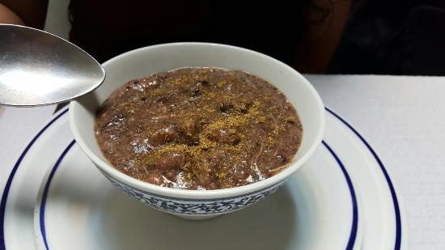
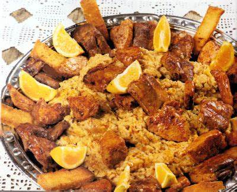
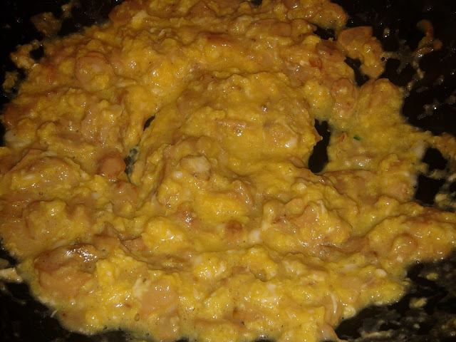

A Comida de Portugal: Sabor, Tradição e Coração.
A gastronomia portuguesa é uma das mais ricas e autênticas do mundo. Marcada por sabores intensos, receitas centenárias e ingredientes frescos, a culinária de Portugal reflete a alma do país: simples, acolhedora e cheia de história.
Bacalhau: o rei da cozinha portuguesa
Dizem que há uma receita de bacalhau para cada dia do ano — e talvez até mais. Assado, à Brás, à Gomes de Sá ou em bolinhos, o bacalhau é o ingrediente mais emblemático da cozinha portuguesa. Mesmo sendo um peixe importado, ele se tornou um verdadeiro símbolo nacional.
Sabores do mar
Com uma extensa costa atlântica, Portugal tem uma ligação profunda com o mar. Mariscos, polvos, lulas, percebes e sardinhas fazem parte do cardápio tradicional, especialmente nas zonas costeiras. As sardinhas assadas, por exemplo, são uma estrela nas festas populares de verão.
A riqueza da terra
No interior, os pratos ganham um sabor mais rústico. O cozido à portuguesa, a feijoada, o cabrito assado e as migas são exemplos de receitas que usam ingredientes locais e métodos tradicionais de preparação, passados de geração em geração.
Doces que contam histórias
Os doces portugueses são uma verdadeira herança conventual. Ovos, açúcar e amêndoas se transformam em verdadeiras obras de arte, como os pastéis de nata, os ovos moles de Aveiro, o toucinho do céu e as queijadas. Cada região tem os seus segredos e especialidades.
Comer é celebrar
Mais do que sustento, a comida em Portugal é um ato de partilha. Reunir a família à mesa, saborear pratos tradicionais e manter vivas as receitas dos avós é parte essencial da cultura portuguesa. Comer bem é, antes de tudo, uma forma de celebrar a vida.
Outras Comidas Típicas

Papas de Sarrabulho
Um prato do norte de Portugal, feito com sangue de porco, carne desfiada, pão ou farinha de milho.

Migas à Alentejana
Típicas do Alentejo, as migas são feitas com pão duro, alho, azeite e carne de porco.

Açorda de Marisco
É uma sopa grossa feita com pão, alho, coentros e caldo de marisco — reconfortante e cheia de sabor.

Túberas
são salteadas com ovos ou usadas em pratos simples para destacar o sabor terroso.
Papas de Sarrabulho
Um prato do norte de Portugal, feito com sangue de porco, carne desfiada, pão ou farinha de milho.
Migas à Alentejana
Típicas do Alentejo, as migas são feitas com pão duro, alho, azeite e carne de porco.
Açorda de Marisco
É uma sopa grossa feita com pão, alho, coentros e caldo de marisco — reconfortante e cheia de sabor.
Túberas
são salteadas com ovos ou usadas em pratos simples para destacar o sabor terroso.